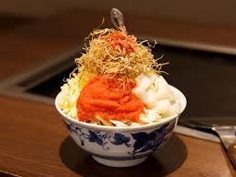

Your Destination is...
Japan: Tokyo

Basic Information
- The capital of Japan
- Flight Duration: Approximately 13 hours (direct flight from Toronto)
- Time Difference: 14 hours (13 hours during Day Light Saving Time)
Famous Things of Tokyo
| Place | Tokyo TowerA 333-meter tall iconic landmark, serving as a broadcasting tower and popular tourist attraction with stunning city views. |
Tokyo SkytreeA 634-meter tall broadcasting and observation tower, offering breathtaking views of the city and serving as a major tourist and cultural landmark. |
Shibuya CrossingA famous and bustling pedestrian intersection, known for its massive crowds and iconic, synchronized flow of people crossing from all directions. |
|---|---|---|---|
| Food | SushiA traditional Japanese dish consisting of vinegared rice, often paired with various toppings such as raw fish, vegetables, or egg, and sometimes wrapped in seaweed. |
RamenA popular Japanese noodle soup dish made with wheat noodles served in a flavorful broth, typically topped with ingredients like sliced pork, eggs, seaweed, and green onions. |
MonjayakiA savory Japanese pancake made with a thin, batter-based mixture of cabbage, meat, seafood, and other ingredients, cooked on a griddle and eaten directly from the cooking surface. |
Model Travel Plan
-
9:00
Toyosu
A modern waterfront district, known for its upscale dining, shopping, and the Toyosu Market, which replaced the famous Tsukiji Market as the city's primary wholesale fish market.
-
Toyosu Fish Market -
You can enjoy a food tour!
-
-
10:00
Omotesando
A chic, tree-lined avenue, famous for its luxury boutiques, modern architecture, and stylish cafes, offering a sophisticated shopping and dining experience.

Omotesando
-
12:00
Shibuya
A vibrant district known for its iconic crossing, shopping, and nightlife, while Shibuya Sky offers stunning panoramic views of the city from its observation deck.
-
Shibuya Sky
-
-
13:00
Daikanyama
A trendy, upscale neighborhood known for its stylish cafes, boutiques, and relaxed atmosphere, making it a perfect spot for shopping and strolling. You may see Japanese celebrities!
-
Daikanyama 
A stylish boutiques
offering trendy and unique clothing
-